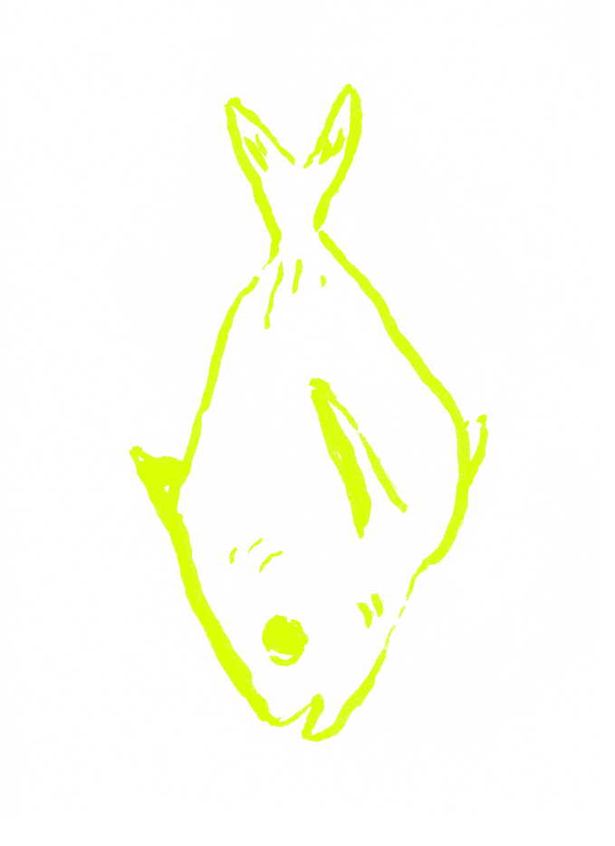

¿cuál
es la
naturaleza
de las
cosas?

Uno hace lo que hace, sostenido, primero que nada, en un punto del tiempo en que el pasado es una inamovible concatenación de casualidades o voluntades. En la infancia por ejemplo, se descubre el talento, no como eso ciertamente, sino como una herida con la que nacemos y con la que aprendemos a jugar con la inocencia de un niño que se arranca una costra. Aparece una sensación que nos causa o no el deseo de buscar en esa inquietud, como buscando en un dolor o en las enrevesadas fluctuaciones de la piel de una cicatriz que dejó acompañando un dolor que con los años llegaremos a colgar como nuestro propio arte en una pared a la que volveremos la mirada una y otra vez con horror o complacencia o una combinación de ambas cosas. Llega un momento en que se decide ir tras el talento, y es una rara necesidad la que nos empuja: la singularidad de una inquietante rareza que descubrimos propia y única, y hacemos lo que hacemos, primero que nada, por la necesidad de sobrevivir gracias a esa difusa diferencia que hemos encontrado como oro entre guijarros. Aquello es lo que inicialmente nos ayuda a enfrentar ese mundo incomprensible donde nuestras heridas no nos dejan y no nos dejarán encajar nunca.
El pasado o la infancia, la herida que no sabemos decir en qué lugar de nosotros duele nos acompañará toda la vida. Nos vemos en ella, moviéndonos con errática insistencia en un mundo que sentimos cambia a cada minuto, que se destruye. Volvemos una y otra vez a jugar ese juego raro de los niños, o como decía el poeta Enrique Lihn, a vengar a dientes y una primera efusión de sangre.
Hacemos, también, lo que hacemos porque nos gusta. Porque sí, en muchos casos. Recuerdo la primera vez que tuve conciencia de la singularidad de una imagen; pienso en ese momento como en algo irrepetible, un luz irrepetible, en tiempo y espacio ya borrados por la turbia erosión de años que ya se han llevado tantas cosas. Recuerdo que me quedé frente a esa escena -una muralla en ruinas iluminada por los últimos rayos de la tarde, cerca de la costa del litoral- parado, solo porque frente a mi existía algo que nunca había visto. Claramente el presente existe en todo esto como ese solo instante en que estamos parados y que nos acompañará con la herida a cuestas todos los días; es, también, donde se desarrolla la búsqueda de nuestra naturaleza propia como una cosa que se hace o un proceso que es como una palabra que se ajusta precisa en diversos tonos o en muchos lenguajes diferentes al borde de ese abismo que nos separa de la muerte. En ese abismo al que nos vamos hundiendo desde que algo, una voz quizás en nuestro interior, la sensación de que dentro de nuestro corazón hay una cosa que tenemos que decir no porque queremos sino porque debemos, las respuestas aparecen día a día, pero huérfanas de pregunta.
Un artista vive toda su vida de ese modo: lleno de respuestas que no tienen preguntas aparentes y en cuyo largo trayecto existen difusas indecisiones; pienso en el pintor Oskar Trepte, que en sus cuadros a veces no podía decidirse en qué parte existían o no las personas que habitaban esos rarísimos paisajes polvorientos y cotidianos, pintados con tanta perturbadora extrañeza; y como no podía hacerlo, intempestivamente borraba a algún comensal, dejando a su contraparte, esas raras figuras alargadas de rasgos oscuros parecidos a los espantapájaros, hablando hacia la nada o dialogando con nadie o con una mancha de algo que allí estuvo y que únicamente se intuye por una graduación de color que rellena el fondo como una corrección; a veces no podía decidir si un objeto pasaba por atrás o por delante de algo, y en esa duda pintaba aquel objeto transparente, haciéndolo existir en una zona que no era ni la vida ni la muerte sino una mezcla de ambos estados. En el caso de los fotógrafos podríamos decir que cada imagen es la respuesta de una pregunta que buscamos toda la vida.
Pero, ¿por qué buscamos y qué buscamos? ¿Por qué hacemos lo que hacemos incontables horas mirando el río impreciso del tiempo, esperando luz y composición?
Hay personas que son impelidas por un espíritu de denuncia, otros cuyo trabajo o interés los impulsa, otros porque no pueden hacer otra cosa, y eso no es lógico casi para nadie, porque no busca ganar y es más aún: se atreve a perder. Eso me parece de auténtica valentía; escribir sobre la nada, caminar por una ciudad desierta componiendo con el rectángulo en la mano paisajes que constan de cosas incompletas, de hombres cortados a la mitad y que salen del cuadro hacia la nada, mientras el mundo que habitamos solo existe para nosotros o parece destruirse en la medida que nos alejamos, o parece separado de nosotros como si fuera el amor, por una infranqueable distancia que las manos o el tacto no alcanzan y solo alcanzan los ojos.
He conocido artistas, por otro lado en que esa distancia tiene que ver con el tiempo o con algún recuerdo: buscan, por ejemplo, revivir una vieja sensación, buscan sus imágenes en un sabor que alguna vez sintieron desvaído en la boca o en la piel o en algo indescriptible (recuerdo a un prisionero político del barco Lebu que en momentos salía de su calabozo hacia la cubierta y desde allí miraba Valparaíso cubierto por la neblina, y al no ver la ciudad sino únicamente esa espesa cortina de nubes turbias, sabía que veía algo que no veía; esa sensación lo acompañó toda la vida, y al hacer fotos algo de esa sensación que pertenece a lo que está ciertamente detrás de las cosas, es inseparable de su razón plástica); otros que son empujados por un contexto en el que el azar o la casualidad quiere que estén, pero cuya intención jamás fue hacer lo que hicieron: hay fotógrafos que eran hombres solos y que al caminar por quebrados barrios también solos, entre siluetas de hombres desdichados como ellos, que se recortaban contra el fondo de una ciudad difusa, por un milagro maravilloso llevaban una cámara y sin ninguna razón consciente o aparente se paraban entre autos o se mezclaban entre la multitud, una multitud incomprensible, mirando por el visor escenas que no significaban un argumento claro. La naturaleza de las cosas siempre es una respuesta sin pregunta entonces. Eso es y nada más que eso, aunque la acompañen el amor o la obsesión. La naturaleza de las cosas es ese paseo en una cuerda floja sobre la muerte. La naturaleza de las cosas es la búsqueda de esa pregunta que responderá todas nuestras respuestas y quizás es también la búsqueda de esa pregunta final que no nos atreveremos nunca a formular en voz alta. La naturaleza de las cosas es asumir que la agonía no es únicamente el momento previo a la muerte sino una larga temporalidad previa, cuya condición donde la imperiosa necesidad de crear convive igualmente como algo que nos recuerda todo ello, es un requisito para la nada a la que tememos tanto, a la que llenamos con tantas máscaras y argumentos y disfraces o imágenes y mentiras que quieren eternizar algo imposible de eternizar.
Valparaíso, Septiembre 2025